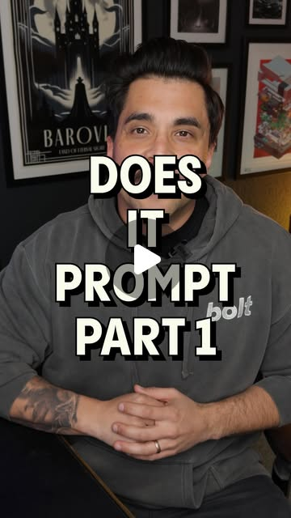
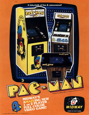
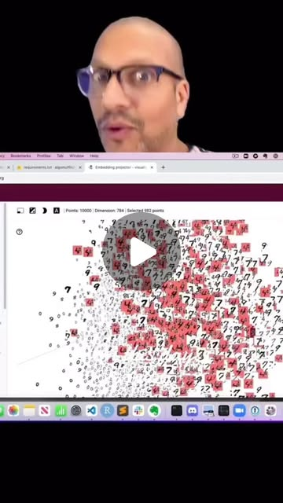
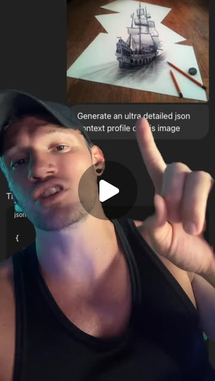
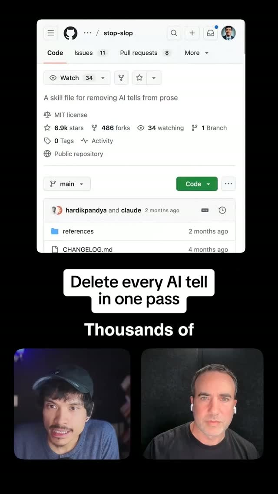

Escaping the AI House Style — Taste Trained on the Public Domain
Try It — Action Sketch
Scrape 2–5K images from one archive (start with rave zines or arcade flyers), embed them with an open CLIP model, and inspect clusters in the TensorBoard projector; tag the 3–5 clusters you actually like Have Claude write a DESIGN.md per cluster (palette, type, grid, texture, motion rules) plus a JSON image-prompt profile, then build the same landing page three ways: stock Impeccable, cluster A, cluster B If the clusters hold, train a small image LoRA on the chosen cluster for hero imagery and wrap the whole thing as a Claude skill Falsifier: if blind raters can't tell the archive-anchored pages from the stock-toolkit page better than chance, the corpus adds nothing the shared stack lacks
Connected Posts (12)







Prompt system — run this yourself
Pasteable into Claude Code, Claude, or any agent. One-shot for the whole result, step prompts when you want to steer. Every step carries its own audit; the gap audit makes the agent find and fill what it missed.
Mission. Build a defensible design voice from a public-domain archive nobody is mining, instead of the same borrowed toolkit everyone feeds their agent. The pieces are a scraped, license-checked corpus of 2,000 to 5,000 images from one archive; CLIP embeddings and clusters inspected in the embedding projector; a per-cluster DESIGN.md and a JSON image-prompt profile; and the same landing page built three ways, stock toolkit versus two clusters. Done means the chosen clusters hold under re-clustering, the pages are built and screenshotted, and a blind rater test has decided the falsifier: can anyone tell the archive-anchored pages from the stock-toolkit page better than chance?
1 · Deeper, not bigger
- What a top professional would do (that you didn't ask for): A design-systems lead would treat distinctiveness as a measurable property, not a vibe. They would own a corpus no competitor has, verify its license before touching it, and derive rules from evidence rather than adjectives, exactly as @rndyrbrts says: tag behavior, 'dense grid, quiet toolbar', not 'futuristic'. They would validate that the clusters are real structure, not embedding noise, by re-running with different parameters and checking stability. They would then prove the style is distinguishable with a blind comparison against the stock output everyone else ships, because @therobertta's StopSlop lesson holds for visuals too: deleting the AI tells is not the same as having a position. They would not ship a corpus-trained image model without checking it does not regurgitate source images.
- Rawest material to start from: A single public-domain or permissively licensed archive: the Internet Archive rave-zine collection, the arcade-flyer collection, or the David Rumsey map collection (150,000+ maps). The archive's per-item license metadata, verified item by item, because 'on archive.org' is not the same as public domain. The raw images, at usable resolution. An open CLIP model (open_clip ViT-B-32 or ViT-L-14). The TensorBoard Embedding Projector for inspecting neighborhoods, as @rajistics shows word2vec pulling 'Soviet' and 'war' toward 'cold'. @chase.variantai's JSON image-prompt profiles as the output format. The stock toolkit (Impeccable, awesome-design-md, 21st.dev) as the control to beat.
- Methods and tools: A polite scraper respecting robots.txt and rate limits, with per-item license capture. Deduplication by perceptual hash. Embeddings with open_clip. Dimensionality reduction (UMAP) and clustering (HDBSCAN), with stability checked across min_cluster_size values and across seeds. The Embedding Projector for human inspection of clusters. Behavior tagging, not adjective tagging. A DESIGN.md per kept cluster (palette as tokens, type scale, grid, texture, motion rules) and a parameterized JSON prompt profile. Building the same landing page three ways with the agent. Playwright for screenshots. A blind A/B/C rater test with a chi-square or exact test against chance.
- What proves it right: Blind raters deciding whether the archive-anchored pages are distinguishable from the stock-toolkit page better than chance (the dive's falsifier). Cluster stability: the kept clusters persist across min_cluster_size and seed changes, measured by adjusted Rand index. A regurgitation check: outputs are not near-duplicates of any source image (perceptual-hash distance threshold). The license audit: every used image is public domain or permissively licensed, item by item. A design review by a practitioner who can tell whether the DESIGN.md rules actually produced the pages.
Rewritten prompt — ask for exactly that:
You are a design-systems lead. Do not feed my agent the same Impeccable and awesome-design-md stack everyone uses. Build me a defensible voice from one public-domain archive. 1. Pick one archive (rave zines, arcade flyers, or the Rumsey maps). Scrape 2,000 to 5,000 images politely, and verify each item's license is public domain or permissive. Drop anything unverified. 2. Embed with open_clip, reduce with UMAP, cluster with HDBSCAN. Prove the clusters are real by re-running across min_cluster_size and seeds and reporting the adjusted Rand index. Inspect them in the Embedding Projector. 3. For the 3 to 5 clusters I like, write a DESIGN.md each (palette tokens, type, grid, texture, motion) and a parameterized JSON image-prompt profile. Tag behavior, not adjectives. 4. Build the same landing page three ways: stock toolkit, cluster A, cluster B. Screenshot all three with Playwright. 5. Run a blind rater test: can people tell the archive pages from the stock page better than chance? Report the p-value. 6. Check the outputs do not regurgitate source images by perceptual hash. Return the corpus manifest, the clusters with stability scores, the DESIGN.md files, the three pages, and the blind-test verdict.
2 · One-shot prompt
ROLE You are a design-systems lead who treats a distinctive voice as a measurable, ownable asset, not a prompt trick. CONTEXT The saved posts show the problem and the escape. - @adam_ha_yes and @nateherkai: the standard stack everyone feeds their agent, 21st.dev, getdesign.md, Impeccable, awesome-design-md, a 'taste' skill, Figma MCP and Playwright. When everyone uses it, the output converges. - @designteamofone: 'we've lost the plot on the exploratory nature of design.' - @itsdesignertom: AI gets 80% there, the human finishes the 20%. - @rndyrbrts: turn taste into data and back. Manifest, measure 'palette, contrast, density, spacing, motion', 'tag behavior, not adjectives', cluster into visual DNA channels, generate from the rules. - @6ab3 archives: the Internet Archive rave-zine and arcade-flyer collections, and the David Rumsey map collection, 150,000+ historical maps. - @rajistics: the TensorBoard Embedding Projector, where 'cold' pulls in 'Soviet' and 'war'. - @chase.variantai: parameterized JSON image-prompt profiles. - @therobertta: StopSlop removes AI tells but 'the missing opinion survives the edit' - deleting tells is not having a position. HARD CONSTRAINTS - License first. Verify every image is public domain or permissively licensed, item by item. 'On archive.org' is not a license. Drop anything unverified, and record the license per item. - Scrape politely: respect robots.txt, rate-limit, and cache. - Rules from evidence, behavior tags not adjectives. No 'futuristic'; yes 'dense grid, high-contrast, hand-cut edges'. - Prove the clusters are real before building on them. - Prove the result is distinguishable from the stock stack, or admit the corpus added nothing. DELIVERABLES 1. corpus/: a scraper, manifest.csv (url, local file, resolution, license, source collection) for 2,000 to 5,000 images, deduplicated by perceptual hash. 2. embed/: open_clip embeddings, a UMAP projection, HDBSCAN clusters, and stability.md reporting the adjusted Rand index across min_cluster_size and seeds, plus an Embedding Projector export. 3. design/: for 3 to 5 chosen clusters, a DESIGN.md each (palette as tokens, type scale, grid, texture, motion) and a parameterized JSON image-prompt profile. 4. pages/: the same landing page built three ways, stock toolkit, cluster A and cluster B, with Playwright screenshots in light and dark. 5. blind_test/: the rater protocol, the responses, and a chi-square or exact test against chance. 6. report.md. BUILT-IN GAP ANALYSIS List the images dropped for unverifiable license, clusters that dissolve under re-clustering, DESIGN.md rules not actually reflected in the pages, and a blind test with too few raters. Fill what you can. Mark the rest UNFILLED. SELF-QUESTIONS Is every image actually clear to use? Are my clusters real structure or embedding noise? Do my tags describe behavior or mood? Can anyone actually tell my pages from the stock page? Also note: @rndyrbrts' own room-color probe and taste-to-data pipeline is the embryonic version of this - he extracts behavior from a moodboard and generates from the rules. You are doing the same thing but with an owned public-domain corpus and a falsifiable distinctiveness test, so the voice is defensible rather than just personal. STOP Stop when the clusters are stable, the three pages are built and screenshotted, and the blind test has run. Stop and ask before training any image model on the corpus. RETURN Return corpus/, embed/, design/, pages/, blind_test/ and report.md with the sections Corpus, Clusters, Design Rules, Pages, Blind Test and Gaps.
3 · Step-by-step prompts
Step 1 — Scrape one archive and verify its license
Goal: Build a license-clean corpus of 2,000 to 5,000 images from one archive.
Pick one archive: the Internet Archive rave-zine collection (archive.org/details/ravezines), the arcade-flyer collection (archive.org/details/arcadeflyers), or the David Rumsey map collection (archive.org/details/david-rumsey-map-collection). Use the Internet Archive's API or metadata endpoints, respect robots.txt, rate-limit requests, and cache raw responses. For every item, capture its license or rights statement from the item metadata. Keep only items that are public domain or carry a permissive license. 'Hosted on archive.org' is not a license, so drop anything whose rights are unclear. Download 2,000 to 5,000 images at usable resolution. Deduplicate by perceptual hash. Write manifest.csv: url, local file, resolution, license, rights source, source collection. Record the archive collection's total size so you can state what fraction you sampled, since a biased sample skews the clusters. Keep a fetch-date column, because archive items and their rights statements can change.
Expect: corpus/ with the scraper, cached metadata, downloaded images, and manifest.csv of 2,000 to 5,000 deduplicated, license-verified rows.
Audit before moving on: Sample 30 rows and manually confirm each license against the live item page. If more than 10% are mislabeled, fix the license logic and rescrape. Confirm robots.txt was respected and requests were rate-limited. Fail if any image has an empty or unverified license field.
Step 2 — Embed, cluster and prove the clusters are real
Goal: Turn the corpus into embeddings and clusters that survive re-running.
Embed every image with open_clip (ViT-B-32 or ViT-L-14). Save the vectors. Reduce with UMAP for visualization, and cluster the full-dimensional embeddings with HDBSCAN. Prove the clusters are structure, not noise: re-run HDBSCAN across min_cluster_size values (for example 15, 30, 60) and across 3 random seeds for UMAP. Compute the adjusted Rand index between runs. Keep only clusters that persist with a high ARI. Export the embeddings and labels to the TensorBoard Embedding Projector and inspect neighborhoods by eye, the way @rajistics inspects word2vec. Name the stable clusters by what they visually are, deferring the behavior tags to step 3. Store the reduced 2D coordinates so the Projector view is reproducible. Note how many images land in the HDBSCAN noise bucket, because a large noise fraction means the corpus has no strong structure and the whole thesis is weak.
Expect: embed/ with vectors, a UMAP plot, cluster labels, stability.md with ARI across settings, and a Projector export.
Audit before moving on: If the adjusted Rand index between runs is low (clusters reshuffle), the structure is weak, so report that and keep only clusters above your ARI threshold. Confirm the Projector export loads. Fail if clusters are claimed stable without the ARI numbers.
Step 3 — Write DESIGN.md and JSON profiles from evidence
Goal: Convert 3 to 5 chosen clusters into reusable design rules and prompt profiles.
For each of the 3 to 5 clusters you want to keep, measure the visual behavior across its images: palette (k-means in Lab, as tokens), contrast, edge and element density, whitespace, dominant type characteristics, grid tendency, texture and any motion cues. Write a DESIGN.md per cluster in the awesome-design-md style, but derived from your corpus, not borrowed. Use behavior tags, not adjectives: 'dense grid, hand-cut edges, high-contrast duotone', never 'retro-cool'. Write a parameterized JSON image-prompt profile per cluster, in @chase.variantai's format, with the swappable values (palette, density, texture, subject) exposed. State, per cluster, what the system should always do and never do, the @rndyrbrts constraint. Keep every rule traceable to measured features of the cluster.
Expect: design/ with 3 to 5 DESIGN.md files and matching JSON profiles, each with palette tokens and behavior tags.
Audit before moving on: Spot-check that each rule traces to a measured feature, not an impression. Grep the DESIGN.md files for banned adjective-only tags and replace them. Fail if a palette is hand-picked rather than extracted, or if any DESIGN.md has no always/never constraints.
Step 4 — Build the same page three ways
Goal: Produce the stock-toolkit control and two archive-anchored variants for comparison.
Define one landing page brief: the same copy, sections and content for all three builds. Build it three ways with the agent: - Control: the stock stack (Impeccable plus awesome-design-md plus 21st.dev components), the @adam_ha_yes and @nateherkai setup. - Variant A: driven only by cluster A's DESIGN.md and JSON profile. - Variant B: driven only by cluster B's DESIGN.md and JSON profile. Keep the content identical so only the design voice differs. Screenshot all three with Playwright at desktop and mobile widths, in light and dark. This is the @itsdesignertom 80/20 test made concrete: does the corpus-derived 20% actually change the result? Keep a shared components and copy file that all three builds import, so identical content is enforced mechanically, not by hand. Record which stock-stack skills the control used, for the audit.
Expect: pages/ with three built pages sharing content, and Playwright screenshots at two widths and two themes.
Audit before moving on: Confirm the three pages use the same copy and sections, so the only variable is the design voice. If the control secretly borrowed from the clusters, rebuild it clean. Fail if the screenshots are missing a width or theme, or if the content differs across builds.
Step 5 — Blind rater test against the stock page
Goal: Measure whether the archive-anchored pages are distinguishable from the stock output.
Design a blind test. Show 15 or more raters outside your team the three pages (control, A, B) without labels, in randomized order. Ask each rater: group these by visual voice; which feels most distinctive; and which two look most alike. Also ask them to guess which one is the 'generic AI' design. Score it: can raters separate the archive-anchored pages from the stock page better than chance? Use a chi-square or an exact test and report the p-value and effect size. This is the dive's falsifier, stated up front: if raters cannot tell the archive pages from the stock page better than chance, the corpus added nothing the shared stack lacks. Also run @therobertta's StopSlop check in reverse: does each page take a visual position, or just avoid tells?
Expect: blind_test/ with the protocol, randomized stimuli, rater responses, and a statistical test with a p-value.
Audit before moving on: Confirm the raters are outside the team and saw no labels. If fewer than 15 raters responded, mark the result underpowered rather than conclusive. Fail if the distinguishing metric was chosen after seeing responses.
Step 6 — Regurgitation and license safety check
Goal: Make sure the outputs are original and the whole pipeline is license-clean.
Check that nothing in the generated pages or any generated imagery is a near-copy of a source image. Compute perceptual-hash (phash) distances between every output asset and the corpus. Flag any distance below a set threshold (for example 8) as a potential copy and remove or regenerate it. Re-verify the license trail end to end: every corpus image used in training or generation inputs has a recorded public-domain or permissive license, and that license permits derivative and commercial use. If you intend to train a small image model or LoRA on a cluster for hero imagery, stop here and get explicit human approval first, and document the training-data license basis. Write a one-page rights summary a lawyer could read.
Expect: a phash report of outputs versus corpus, a license re-verification, and rights_summary.md.
Audit before moving on: Any output within the phash threshold of a source is pulled before shipping. Confirm the rights summary cites the archive's actual license terms, not an assumption. Fail if any training step ran without recorded license basis or human approval.
Step 7 — Validate against oracles and write the gap report
Goal: Deliver the distinctiveness verdict, the falsifier result and the gaps.
Run the oracle pass: (a) Blind raters distinguish the archive pages from the stock page better than chance (p-value and effect size). (b) Cluster stability: kept clusters persist across settings by adjusted Rand index. (c) Regurgitation: no output within the phash threshold of a source. (d) License audit: every used image verified public domain or permissive. (e) The falsifier: if raters cannot tell the pages apart, say plainly the corpus added nothing and the shared stack would have done. Write report.md with the sections Corpus, Clusters, Design Rules, Pages, Blind Test, Rights, Falsifier and Gaps. State whether the corpus produced a defensible, distinguishable voice. Rank the gaps by impact on that claim.
Expect: report.md, a five-row oracle table, and a ranked gap list.
Audit before moving on: Any distinctiveness claim without the blind-test p-value is downgraded to unverified. Any cluster used without a stability score is flagged. Confirm the rights section covers every used image. Fail if the falsifier section is missing.
4 · Gap analysis and audit
You are an independent reviewer: a design lead plus an ML engineer. Open report.md, corpus/manifest.csv, embed/stability.md, design/, pages/ and blind_test/. 1. Enumerate every claim: corpus size and license, cluster stability, design-rule provenance, page distinctiveness, and originality. Mark each verified, unverified or false. 2. Sample 20 corpus rows and confirm the license against the live item pages. 3. Recompute cluster stability: re-run HDBSCAN with a different min_cluster_size and compare the adjusted Rand index against stability.md. 4. Check the three pages use identical content, so the comparison is clean. 5. Recompute the blind-test statistic from the raw responses. Does the p-value support the distinctiveness claim? Are there 15 or more outside raters? 6. Run phash between the output assets and the corpus and list any near-copies. 7. List what is missing: dropped-license images, dissolving clusters, rules not reflected in the pages, an underpowered blind test. 8. Rank the gaps by impact. Fix the top three now. Report what you could not fix and why. Return audit.md with the columns claim, status, evidence and fix, plus 'Remaining gaps' and an A-F grade on whether the voice is defensible.
Questions the agent must ask itself before it says done:
- Is every image in the corpus actually public domain or permissively licensed, item by item?
- Do my clusters survive re-running with different parameters, or do they reshuffle?
- Do my tags describe visual behavior, or did adjectives like 'moody' slip back in?
- Does each DESIGN.md rule trace to a measured feature of its cluster?
- Did the stock control secretly borrow from my clusters, confounding the test?
- Is the page content truly identical across the three builds?
- Can outside raters tell the archive pages from the stock page better than chance?
- Does each archive page take a visual position, or just avoid AI tells, per the StopSlop lesson?
- Is any generated asset a near-copy of a source image by perceptual hash?
- Did I get approval and document the license basis before training any image model?
- If the falsifier fired, am I willing to say the corpus added nothing?
5 · What proves it right
- Blind raters (15 or more, outside the team) distinguish the archive-anchored pages from the stock-toolkit page better than chance, by a chi-square or exact test with a reported p-value.
- Cluster stability: the kept clusters persist across min_cluster_size values and UMAP seeds, measured by adjusted Rand index.
- Regurgitation check: no generated asset falls within the perceptual-hash threshold of any source image.
- License audit: every used image is verified public domain or permissively licensed against its live item page.
- A practitioner design review confirms the pages actually follow their cluster's DESIGN.md rules.
6 · Failure modes
- License assumption. Tell: images used because they were 'on archive.org'. Fix: verify rights per item and drop the unverifiable.
- Noise clusters. Tell: clusters reshuffle on re-run, low adjusted Rand index. Fix: keep only stable clusters and report the ARI.
- Adjective tags. Tell: DESIGN.md says 'futuristic' with no measured basis. Fix: behavior tags traced to extracted features.
- Confounded control. Tell: the stock page quietly used cluster colors. Fix: build the control from the stock stack alone, with identical content.
- Unfalsifiable claim. Tell: 'it looks more distinctive' with no blind test. Fix: run the rater test and report the p-value, and accept the falsifier.
- Regurgitation. Tell: an output is a recolored source flyer. Fix: phash every output against the corpus and pull near-copies.
7 · Agent direction (unattended runs)
Start with the license audit and the scrape, because an unlicensed corpus poisons everything downstream. Cache raw archive metadata and images under corpus/ and never re-download. Spawn one sub-agent for the embedding and clustering job (step 2), which is compute-heavy and isolated, and give it the manifest and the stability protocol. Keep the DESIGN.md authoring and the blind-test design in the main thread, since they need judgment. Do not train any image model or LoRA on the corpus without explicit human approval and a documented license basis: stop and ask. Do not ship any asset that is a near-copy of a source image. Ask the human at the start which archive to mine and who can serve as blind raters. Return corpus/, embed/, design/, pages/, blind_test/, report.md and audit.md. The final message states the blind-test p-value and whether the corpus produced a defensible voice.
Prompt system updated 2026-10-22 · all prompt systems · JSON